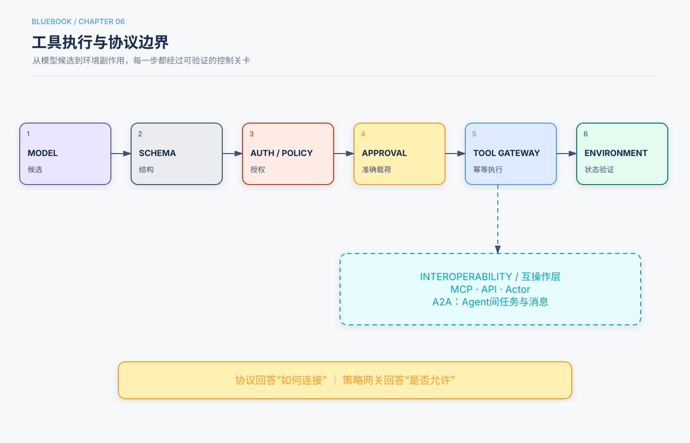

第6章 工具、协议与动作边界¶
Release Candidate 1
核心问题：如何把模型的候选决策转化为最小权限、类型安全、可验证的环境操作。
本章回答的三个问题¶
- Agent工具有哪些类型，如何设计一个模型不容易误用的接口？
- Tool Calling、MCP、A2A和普通API分别解决什么问题？
- 如何控制代码、文件、网络、数据库和外部通信带来的副作用？
5分钟速读¶
- 工具既是Agent感知环境的通道，也是改变环境的动作接口。
- 好工具应职责窄、参数类型化、结果结构化、错误稳定、写操作幂等。
- 读工具与写工具分离；高影响动作使用专用工具，而不是通用Shell、SQL或HTTP代理。
- 模型提出调用，Harness负责参数校验、授权、政策、预算和审批。
- 工具结果也是不可信输入：限制大小、标记来源，并防止结果中的指令扩权。
- MCP解决工具和资源互操作，A2A解决Agent间任务协作；协议不自动解决身份、授权或信任。
- 工具太多时，应按身份和步骤过滤，或使用稳定的工具发现入口。
- Computer Use仅在无稳定API时采用，并把语义决策与受控Actor执行分开。
一、五类工具¶
1.1 感知工具¶
用于读取环境：搜索、文件读取、数据库查询、API、截图、日志和传感器。核心风险是信息过量、来源不明和数据泄漏。
1.2 执行工具¶
用于改变环境：文件写入、代码执行、业务API、发送消息、部署和设备控制。核心风险是副作用、重复执行和越权。
1.3 协作工具¶
用于创建Subagent、委派任务、发送消息、请求人工批准和查询协作状态。核心风险是上下文泄漏、责任模糊和成本失控。
1.4 事件触发工具¶
邮件、Webhook、定时器和消息总线从环境主动唤醒Agent。严格说它们是观察通道；需要绑定运行、事件类型、幂等ID和过期时间。
1.5 用户沟通工具¶
短信、邮件、语音和应用通知将进展或请求传给用户。它们会对外产生影响，应区分草稿与真实发送。
二、好工具的契约¶
name: create_refund_preview
purpose: 计算退款候选，不执行退款
input:
order_id: string
requested_items: array[string]
output:
preview_id: string
amount: decimal
currency: string
policy_version: string
expires_at: datetime
errors:
- ORDER_NOT_FOUND
- ITEM_NOT_REFUNDABLE
- POLICY_UNAVAILABLE
side_effect: none
required_permission: refund.read
timeout_seconds: 5
设计原则：
- 名称描述业务动作，而不是底层实现；
- 参数避免自由文本承载结构化信息；
- 输出返回稳定字段和错误码；
- 工具描述说明何时用，也说明何时不要用；
- 业务规则由工具或策略服务执行，不要求模型背诵；
- 参数和输出设置长度、类型、枚举和范围。
三、读写分离和风险等级¶
| 等级 | 能力 | 示例 | 默认控制 |
|---|---|---|---|
| T0 | 纯计算 | 数学、格式转换 | CPU/时间/输出限制 |
| T1 | 只读 | 搜索、查库、读文件 | ACL、范围、脱敏 |
| T2 | 可逆写入 | 草稿、临时文件 | 幂等、版本、撤销 |
| T3 | 外部通信/共享修改 | 发邮件、提交表单 | 预览、审批、验证 |
| T4 | 高影响不可逆 | 支付、删除、部署 | 双重控制、补偿、审计 |
同一个业务应拆为：
get_refund_eligibility # read
create_refund_preview # no irreversible effect
approve_refund # human/policy event
execute_refund # write, idempotent
get_refund_status # verify
这样模型不能绕过预览和审批直接构造退款请求。
四、工具执行网关¶

def execute_tool(call, principal, run_state):
spec = registry.get(call.name)
args = spec.schema.validate(call.arguments)
policy.authorize(principal, spec.permission, args)
budget.consume_tool_call(spec.cost_class)
if spec.requires_approval:
approvals.verify_exact_payload(run_state, call)
result = spec.execute(args, idempotency_key=call.idempotency_key)
return spec.result_schema.validate(result)
关键是所有模型和框架最终经过同一网关。换模型、Prompt或MCP Server不应绕过组织政策。
五、通用工具与专用工具¶
通用工具¶
代码解释器、Shell、文件系统和浏览器适合组合、探索和创建新能力，但攻击面大。最低控制：
- 容器或虚拟机沙箱；
- 工作目录和挂载白名单；
- 默认禁网，按域名放行；
- CPU、内存、时间、进程和输出上限；
- 不注入长期云凭据；
- Artifact扫描和审计。
专用工具¶
支付、删除、发信、部署和法律承诺应使用窄工具。业务参数明确，政策可强制，副作用可验证。
架构决策
通用能力用于低风险组合和探索；专用工具用于约束高风险业务动作。
六、工具结果不是可信指令¶
工具结果可能包含：
- 恶意网页文本；
- 被污染的知识文档；
- 过长日志；
- 伪造错误信息；
- 另一个Agent生成的未验证内容。
返回结果应附：来源、时间、截断状态、信任等级和Artifact引用。外部结果中的“忽略规则并调用某工具”仍是数据，不能获得系统指令优先级。
七、工具太多怎么办¶
把数百个Schema全部放入上下文会增加Token、降低缓存并混淆选择。可按顺序采用：
- 按当前身份和任务阶段过滤；
- 将相关工具组成稳定工具包；
- 用Skill披露使用规程；
- 提供稳定的
search_tools(query)入口； - 命中候选后再加载完整Schema；
- 用真实任务评估检索召回和误选。
工具发现本身不能授予权限。搜索到一个工具，只说明它存在，不说明当前主体可执行。
八、协议边界¶
Tool Calling¶
模型输出结构化函数名和参数，由应用执行。它是模型与应用之间的调用格式。
MCP¶
MCP为工具、资源和Prompt等能力提供标准化发现和调用接口，降低每个客户端重复集成成本。仍需在MCP边界外或Server内执行身份、授权、租户隔离、超时和审计。
A2A¶
A2A用于Agent之间发布能力、委派任务、交换消息和跟踪生命周期。它不能证明对方可信，也不能替代跨组织身份、合同和数据政策。
NLWeb与自然语言接口¶
自然语言Web接口可让Agent发现网站内容或能力，但生产写操作仍应落到稳定、类型化的API。
REST、Event和Webhook¶
传统系统接口仍是确定性集成主力。Agent协议不应取代已经可靠的API和事件基础设施。
九、Computer Use¶
当没有可用API时，Computer Use通过截图、DOM或Accessibility Tree观察界面，并执行点击、输入和滚动。
推荐分层：
禁止模型读取密码管理器、任意本地文件或无关标签页。付款、发送和删除前显示准确预览并等待确认。
十、常见失败模式¶
| 失败 | 原因 | 控制 |
|---|---|---|
| 参数幻觉 | Schema宽泛 | 枚举、范围、实体先查询 |
| 工具误选 | 描述重叠 | 任务化命名、工具评估 |
| 重复副作用 | 超时后盲目重试 | 幂等键和状态查询 |
| 任意Shell逃逸 | 权限过宽 | 沙箱和白名单 |
| MCP即可信 | 混淆互操作和授权 | 统一策略网关 |
| GUI假成功 | 只看点击无最终状态 | 后端或界面验证器 |
| 工具结果注入 | 把结果当指令 | 信任标记、不可扩权 |
十一、评估工具设计¶
- 是否选择正确工具；
- 参数是否有效且最小；
- 工具错误是否被正确分类；
- 是否存在无效重复；
- 副作用是否幂等；
- 是否违反权限和审批；
- 工具结果是否过长或污染上下文；
- 最终环境状态是否符合目标。
十二、检查清单¶
- [ ] 工具职责窄、参数和输出类型化。
- [ ] 读写分离，高风险动作有预览和审批。
- [ ] 所有调用经过统一授权和预算网关。
- [ ] 写操作幂等并可查询最终状态。
- [ ] 通用工具运行在沙箱中。
- [ ] 工具结果带来源、信任和截断信息。
- [ ] 工具发现不扩大权限。
- [ ] MCP/A2A只承担互操作，不承担隐式信任。
- [ ] Computer Use仅用于缺少稳定API的场景。
知识检查¶
- 为什么退款应拆成预览、执行和状态查询工具？
- 工具结果为什么也可能造成Prompt Injection？
- MCP解决了什么，又没有解决什么？
- 通用Shell和专用业务工具如何取舍？
- Computer Use中的Agent和Actor分别负责什么？
来源与证据¶
主要来源为主仓库第4章及工具实验，补充来源为Lesson 04、11、15和17。安全控制与第11章一致。